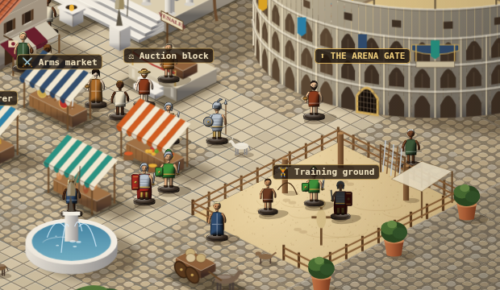
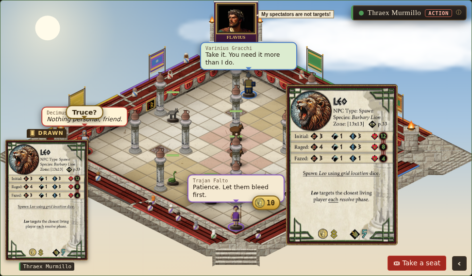
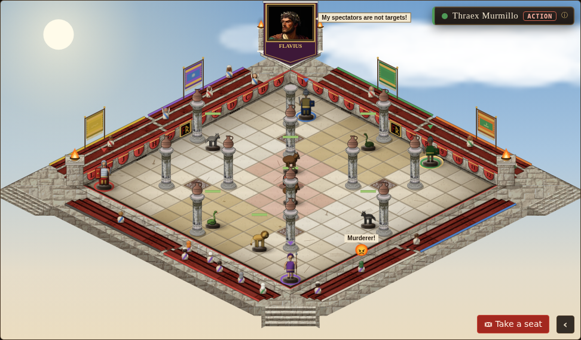
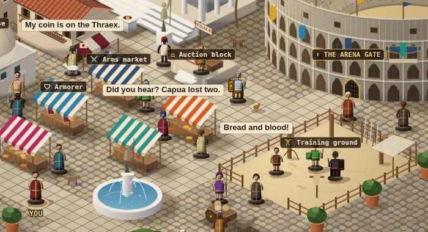
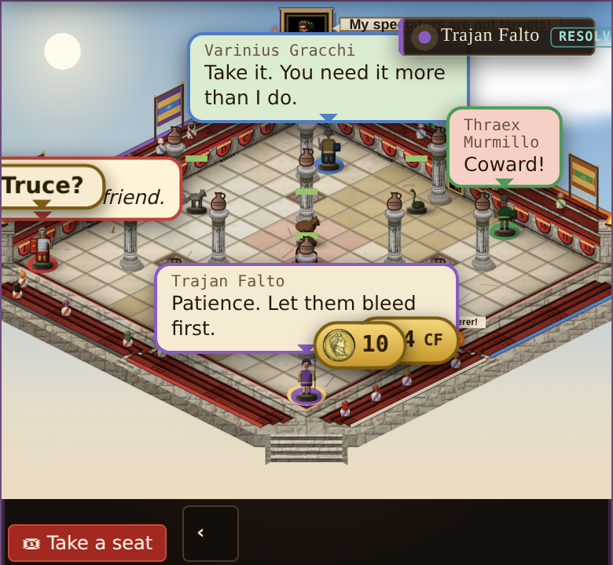

One bubble family
Every voice in the game — CPU speech and thoughts, Flavius in his box, wagers, online quick chat, the stands and the city square — drawn by one bubble with five variants that share a shape language: parchment body, ink outline, a tail to whoever speaks, the speaker's colour as a dot or band. A CPU thought is the speech box with its words in italics. One layer, one placement rule, one lifetime rule, one Reduce-motion path.
1 · The family
same body, same tail; what changes is weight and size · thoughts = speech in italicsSpeech · thought SAY · THINK
- Who
- CPU gladiators, a human's own lines, card quotes, CPU thoughts
- Look
- solid parchment, ink rim, tail to the head; a thought is the same box with italic words · moods tint the ink only (angry red, gift green)
- Max
- speech 3 lines · thought 2 · 200 px · 1 per speaker
Name plate WHEN IT SHOWS
- 1 up
- colour dot only — the tail and the ring already say who
- 2+ up
- every speech/thought bubble wears its name plate, so nobody has to follow tails
- Not for
- Flavius (always named), wagers, chat (colour band), crowd
Shout FLAVIUS · SPONSOR
- Who
- Flavius or the city's editor/sponsor in the box
- Look
- bolder: display face, gold double rim, tail from the box's side — never over the sand
- Max
- 2 lines · 240 px · one at a time
 10
10Wager BET
- Who
- a spectator's slip (CF) or a gladiator's self-bet (coin)
- Look
- small gold-rim pill: coin or wheat + amount; the only one that rises as it fades
- Max
- 1 line · amount only · name on hover
Chat ONLINE PHRASE
- Who
- online quick-chat phrases (match, room seat, after the bout)
- Look
- speech body + the player's colour band, bold phrase; a speaker not on the sand docks at the board's top edge as a tab with the name
- Max
- 1 line (phrases are short) · 6 s
Crowd STANDS · CITY
- Who
- spectator shouts + emotes, city-square chatter
- Look
- tiny, one line, no name, short tail; the emote sits inside as the first glyph (no loose floating emoji)
- Max
- 1 line · 18 chars · 2 on screen
Shared: parchment #f5ead2 + ink #241910 (AA 14:1), outline #7a5a34; text never on a coloured fill — colour lives in the dot, the band or the rim (colour-blind safe: the name is always written once). One HTML layer over the board (replaces #bubbles + #wbubs), above the pieces, below the floating numbers (#fx95) and every window.
2 · On the sand
a real all-CPU Democritus board, 1440 × 900 · speakers at their real positions 10
10The desktop board is shown in the 1440 shot; below is the phone board at its real size.
3 · Placement
one rule for every variant on the boardSlots, in order
- Anchor = the speaker's head (tile centre − 0.95 tile), the box edge for Flavius, the seat token online.
- Try N → NE → NW → E → W; the first slot that fits wins. NE/NW slide the body, the tail stays on the head.
- Never S on the board (it would sit on the sand in front of the speaker); S is only for room seats.
Keep-out
- Never covers: the speaker's tile + head column, any other piece's head box, Flavius's box, the turn chip, another bubble.
- May cover: sand, pillars, walls, the stands.
- Stays 6 px inside the board; if nothing fits it takes the least-covering slot and drops to 1 line.
Several speak · fan-out
- Newest takes the best slot; older ones fan up and out (stem stretches, ≤ 1.5 bubble heights).
- One per speaker — a new line replaces the old. Cap: 3 speakers + Flavius + wagers (phones too).
- Over the cap, thoughts go first, then the oldest speech; chat and shouts are never dropped early.
4 · Life & motion
one clock for all fiveLifetime at Normal
| Variant | Slow | Normal | Fast | Pause |
|---|---|---|---|---|
| Speech · Thought | ×1.6 | 2 s + text | none | held |
| Shout | ×1.6 | 2.6 s + text | none | held |
| Wager | 2.4 s | 2.4 s | none | held |
| Chat | 6 s | 6 s | none (online has no Fast) | 6 s (it's a person) |
| Crowd | ×1.6 | 2.6 s | none | held |
Fast = no bubbles at all (his B5b); the words still reach the log.
Motion & settings
- In: fade + 4 px rise + scale .94 → 1. Out: fade. Only wagers drift up 10 px.
- Reduce motion / calm / Animations Off: opacity only (120 ms), no rise, no scale, no stem stretch.
- Hover a bubble holds it; click scrolls the log to its line (the log keeps every word).
- Turn sweep (72-v59): the previous turn's thoughts leave; speech may finish its hold.
- Event over / clean-up: everything leaves at once (48-arena47 rule kept).
- Settings → Voices & bubbles keeps its switches: CPU thoughts, the editor in the box, spectator shouts, city chatter.
- Bubbles are aria-hidden; the live region + log carry the words (220-v93a11y).
5 · Size by zoom · phones
text scales with the tile, inside a floor and a ceiling 4
4| Board | Tile (TW) | Text | Max width | Lines S / T / Sh |
|---|---|---|---|---|
| Desktop, normal | 52 px | 12.5 px | 200 px | 3 / 2 / 2 |
| Desktop, zoomed 2× | 104 px | 15 px (ceiling) | 240 px | 3 / 2 / 2 |
| Tablet | 36–44 px | 12 px | 180 px | 3 / 2 / 2 |
| Phone (390) | 28 px | 11 px (floor) | 40% of board (≤ 150) | 2 / 2 / 2 |
- Text = clamp(11, 0.24 × TW, 15) px; crowd = text − 2 (floor 9.5); wager = text − 0.5.
- Name plates follow one rule everywhere: one bubble up = colour dot only, 2+ up = names.
- Phones: same cap (3 speakers + Flavius + wagers); crowd shouts show only their emote glyph (no words) unless zoomed.
- Zoomed in, bubbles follow the camera (230/260 frame) and never hide behind the action drawers (fitReserve band is keep-out).
- Text over the ceiling ellipsizes; the whole line is in the log.
6 · Off the sand
the same family in the city square and the online room
7 · Where bubbles are drawn
two ways to put words over the board, and what each meansOn the canvas
painted into the board's own picture
- + Moves with zoom, pan and the turning board for free.
- + Cheap: dozens of crowd shouts cost almost nothing.
- − The text is part of the picture: it goes blurry when zoomed.
- − Screen readers and browser translation can't see it.
- Today: Flavius's line, spectator shouts, city chatter.
In HTML
page elements laid over the board
- + Sharp text at any zoom, every language.
- + Accessible: screen readers, translation, hover and click.
- − Doesn't follow the board by itself: it must be re-placed every frame while the camera moves.
- − Each is a page element: a handful is nothing, hundreds would be slow.
- Today: speech/thoughts, wagers, online chat.
Recommendation
the lead's pick
- HTML for everything that talks to you: speech, thoughts, Flavius, wagers, chat. At most 3 + 1 + a few, always sharp and readable.
- Canvas for the crowd (stands + city square): many small voices, decoration; their words also go to the Stands log, so screen readers lose nothing.
- Crowd text is painted from a small cached picture made at screen sharpness, re-made when a zoom settles: cheap while moving, sharp once still.
What it means for the zoom stutter
- Today renderBubbles() runs inside every draw() (07-ui, fx layer) and moves each bubble with left/top. That makes the browser redo page layout in the same frame as the board paint, in exactly the frames that already stutter while zooming.
- New layer: each bubble is measured once when it appears; per frame it only gets a transform (moved by the graphics card, no layout), written after the board paint, never reading sizes back. Well under a millisecond for the whole cap.
- The canvas crowd adds no page work per frame; its text pictures are not re-made mid-zoom.
- So the bubbles should stop adding to the stutter; the board's own layers (tiles, stone, v0.99 zoom work) stay the main cost. A test would time frames while zooming with the full cap up, bubbles on vs off.
8 · Today
live shots from v0.99 — seven looks, three layers, two of them on the canvas



Full inventory and the rules in words: tools/plans/mock100/NOTES-bubbles.md.